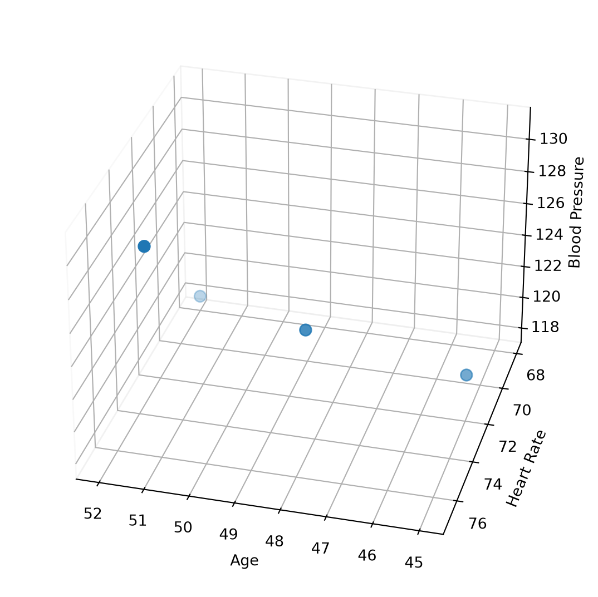
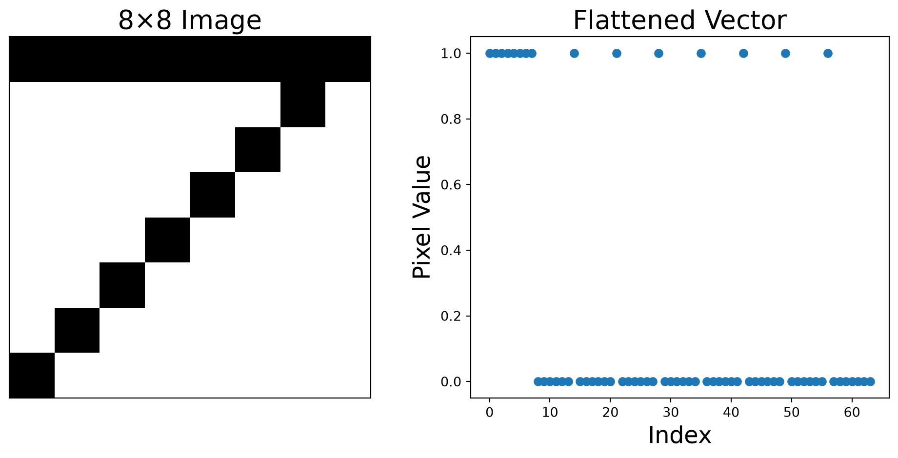
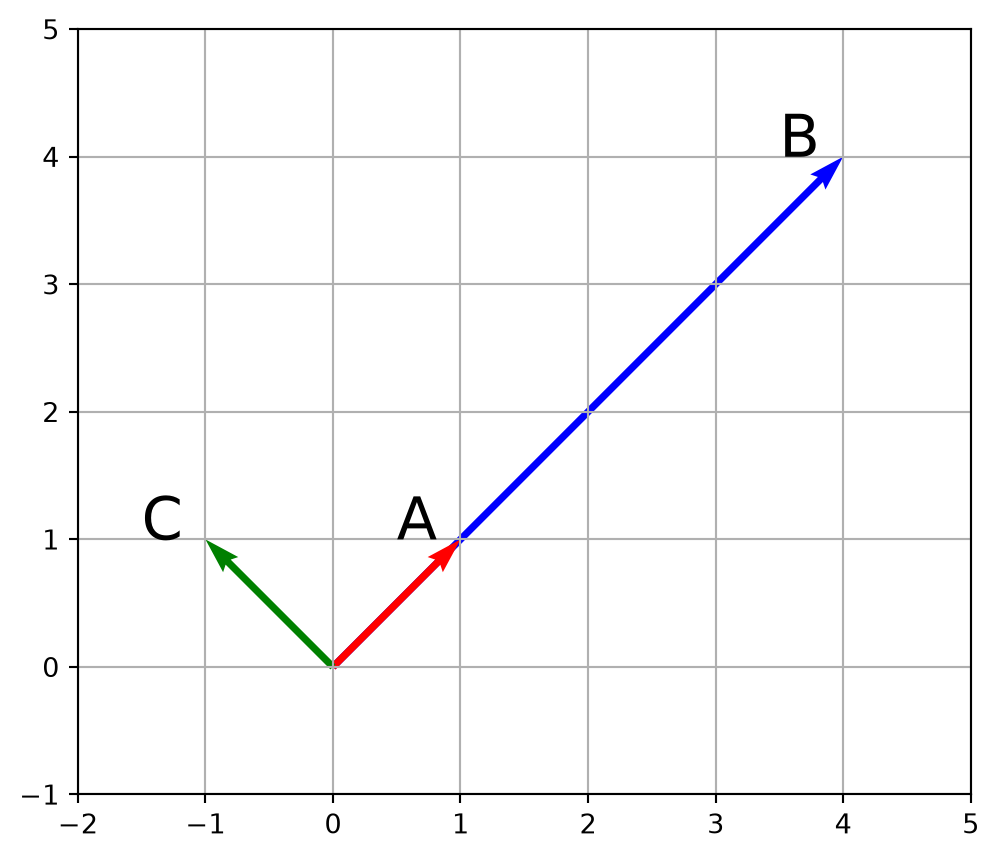
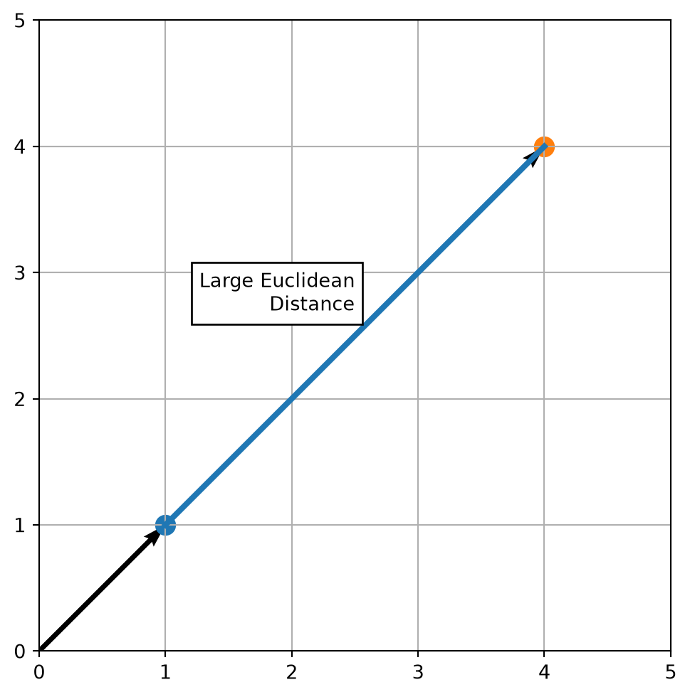
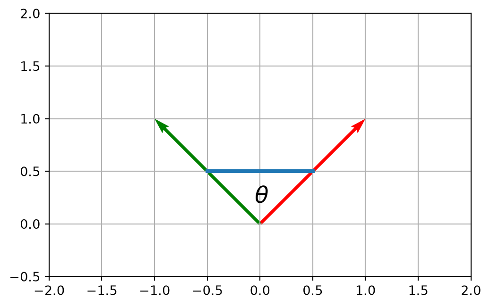

import pandas as pd
patients = pd.DataFrame({
"Age": [45, 48, 52, 51],
"HeartRate": [72, 75, 68, 77],
"BloodPressure": [120, 125, 118, 131]
})16: Distance and Similarity
Vector Spaces and Distance
Distance and the Feature Space
So far, we have viewed vectors as arrows in 2D or 3D physical space. In modern computing, a vector is just a list of features.
If an object has 5 attributes, they can be viewed as a single point in a 5-Dimensional Vector Space. While we cannot draw 5D space, the mathematics work the same. The exact same NumPy addition and dot products we used for 2D apply to 5D or 10,000-dimensional data.
A row in a DataFrame is just a point in a high-dimensional space.
The DataFrame below has a dimension of three, since it contains three features.
We can think of the x-coordinate as age, the y-coordinate as heart rate, and the z-coordinate as blood pressure.
Show Python plotting code
import pandas as pd
df = pd.DataFrame({
"Age": [45, 48, 52, 51 ],
"HeartRate": [72, 75, 68, 77],
"BloodPressure": [120, 125, 118, 131]
})
import matplotlib.pyplot as plt
fig = plt.figure(figsize=(7,7))
ax = fig.add_subplot(projection="3d")
ax.scatter(df["Age"], df["HeartRate"], df["BloodPressure"], s=60)
ax.set_xlabel("Age")
ax.set_ylabel("Heart Rate")
ax.set_zlabel("Blood Pressure")
ax.view_init(elev=30, azim=105)
ax.xaxis.pane.fill = False
ax.yaxis.pane.fill = False
ax.zaxis.pane.fill = False
plt.show()
Note that we can switch any of these labels between axes, the specific choice is not important for calculations.
We can also see that every row is one point and every column is one feature.
print(patients.iloc[0])Age 45
HeartRate 72
BloodPressure 120
Name: 0, dtype: int64How Close Are Two Data Points?
To find similar things, we measure the distance between their vectors. The closer the distance, the more similar the objects are.
The question is, how to calculate the distance?
Distance Measures
There are many ways to calculate the distance in a vector space.
We will talk about the two most commonly used methods.
- Euclidean Distance (Straight-line Distance)
- Manhattan Distance (City Block Distance)
Euclidean Distance (Straight-line Distance)
Euclidean distance is defined as
D_E(x,y) = \sqrt{(x_1 - y_1)^2 + (x_2 - y_2)^2 + ... + (x_n - y_n)^2}
and is used for measurements that are numerical and continuous.
Note that this is just an application of familiar Pythagorean theorem.
# Two patients: [Age, Heart_Rate, Blood_Pressure]
import numpy as np
patient_A = np.array([45, 72, 120])
patient_B = np.array([48, 75, 125])
# Calculate the distance vector, then take its norm
distance = np.linalg.norm(patient_A - patient_B)Manhattan Distance (City Block Distance)
Sometimes a straight line is impossible or gives too much weight to certain large differences. Manhattan distance can then be used, which is the sum of the absolute differences.
D_M(x,y) = |x_1 - y_1| + |x_2 - y_2| + ... + |x_n - y_n|
# Two patients: [Age, Heart_Rate, Blood_Pressure]
patient_A = np.array([45, 72, 120])
patient_B = np.array([48, 75, 125])
distance = np.linalg.norm(patient_A - patient_B, ord=1)Finding the Closest Match
How does a computer classify something new?
- It finds the closest historical data point.
We will develop an algorithm to find the closest match in our DataFrame for a given point.
- We need to iterate through every row in the DataFrame, as we will not know if there is a closer pair unless we examine every pair.
- We then need to calculate the distance between each pair.
- We will need to keep track of the smallest distance.
best_distance = infinity
for every row:
compute distance
if smaller:
remember row
Try converting the pseudocode above before looking at this solution.
Show Solution
unknown = np.array([46,74,121])
smallest_distance = np.inf
for _, row in df.iterrows():
d = np.linalg.norm(row.to_numpy() - unknown)
if d < smallest_distance:
smallest_distance = d
print(smallest_distance)2.449489742783178We can find the same answer by using the min() method if we calculate all the distances beforehand. One of the benefits of arrays in NumPy is the ability to perform operations on every object in the array.
unknown = np.array([46,74,121])
distances = np.linalg.norm( patients.to_numpy() - unknown,
axis=1 #this specifies we calculate across the columns
)
print(distances.min())2.449489742783178What about finding the two closest points?
Most of our code can be reused, but we will need to keep track of the second smallest distance.
Try developing this on your own using the solution to the single closest point.
Show Solution
smallest_distance, second_smallest_distance = np.inf, np.inf
for _, row in patients.iterrows():
d = np.linalg.norm(row.to_numpy() - unknown)
if d < smallest_distance:
second_smallest_distance = smallest_distance
smallest_distance = d
elif d < second_smallest_distance:
second_smallest_distance = dWhat about finding the three closest points?
We now need to have conditions that handle:
- the observation is the smallest overall
- the observation is the second smallest overall
- the observation is the third smallest overall
We need a better solution than continuing to create conditional statements. What we can do is collect all the distances in a list, then sort the list.
unknown = np.array([46,74,121])
distances = []
for _, row in patients.iterrows():
d = np.linalg.norm(row.to_numpy() - unknown)
distances.append(d)
distances.sort()
print(distances)[np.float64(2.449489742783178), np.float64(4.58257569495584), np.float64(9.0), np.float64(11.575836902790225)]Again, we can simply the code needed by leveraging the capability in NumPy to operate across an entire array.
distances = np.linalg.norm( df.to_numpy() - unknown,
axis=1 #this specifies we calculate across the columns
)
distances = np.sort(distances)
print(distances)[ 2.44948974 4.58257569 9. 11.5758369 ]Not Every Feature Needs to Count Equally
Suppose we have two data points with the following features:
Age = 45 and Income = $900,000
Age = 46 and Income = $901,000
In terms of raw numbers, income dominates because the units are much larger.
Does a difference of $1,000 matter more than a year of age? It depends, but this is is why we often rescale data before measuring distance. This is outside of the scope of this course but is important in applications.
Distance is everywhere.
Finding similar customers, movie recommendations, fraud detection, facial recognition, spell checking are all calculating distances. Most of “AI” involves measuring distance as a core component. If you can turn it into a vector, you can measure distance.
Similarity Measures
Everything Can Become a Vector
Once something is represented as a vector, we can compare it mathematically.
| Data | Vector |
|---|---|
| Patient | age, pulse, blood pressure |
| House | bedrooms, bathrooms, square feet |
| Image | pixel brightness values |
| Music | amplitude samples |
| Document | counts of different words |
Images as Vectors
For example, we can represent images as vectors fairly easily. Each image exists in two dimensions and we need some value to indicate the color or intensity. So something like a 3-tuple x, y, i can be used to specify an individual pixel value.
But a more convenient representation from a programming perspective is to flatten these values down into a single vector. If we keep a consistent way of ordering the values in the vector, then this directly corresponds to the pixel location and we only need to keep track of the intensity.
The image below holds a (fairly crude) version of the number seven. We then can transform it into a flattened vector simply by merging all the individual arrays into one large array.
Show Python plotting code
import numpy as np
import matplotlib.pyplot as plt
# Simple "7"
image = np.array([
[1,1,1,1,1,1,1,1],
[0,0,0,0,0,0,1,0],
[0,0,0,0,0,1,0,0],
[0,0,0,0,1,0,0,0],
[0,0,0,1,0,0,0,0],
[0,0,1,0,0,0,0,0],
[0,1,0,0,0,0,0,0],
[1,0,0,0,0,0,0,0]
])
vector = image.flatten()
fig = plt.figure(figsize=(10,5))
plt.subplot(1,2,1)
plt.imshow(image, cmap="gray_r")
plt.title("8×8 Image",fontsize=20)
plt.xticks([])
plt.yticks([])
plt.subplot(1,2,2)
plt.plot(vector, 'o')
plt.title("Flattened Vector", fontsize=20)
plt.xlabel("Index", fontsize=18)
plt.ylabel("Pixel Value", fontsize=18)
plt.tight_layout()
plt.show()
Direction and Magnitude
Looking at the plot we can see that vector A points in the same direction as vector B. But vectors A and C are much closer according to Euclidean distance.
Show Python plotting code
import numpy as np
import matplotlib.pyplot as plt
A = np.array([1,1])
B = np.array([4,4])
C = np.array([-1,1])
fig, ax = plt.subplots(figsize=(6,6))
colors = {'A':'red',
'B':'blue',
'C':'green'}
for vec, label in zip([B,A,C],["B", "A", "C"]):
ax.quiver(
0,0,
vec[0],vec[1],
angles='xy',
scale_units='xy',
scale=1,
width=0.008,
color=colors[label]
)
ax.text(vec[0]-0.5, vec[1]-0.0, label, fontsize=22)
ax.set_xlim(-2,5)
ax.set_ylim(-1,5)
ax.grid(True)
ax.set_aspect("equal")
plt.show()
A = np.array([1,1])
B = np.array([4,4])
C = np.array([-1,1])
print(f'A - B = {np.linalg.norm(A - B)}')
print(f'A - C = {np.linalg.norm(A - C)}')A - B = 4.242640687119285
A - C = 2.0Changing to Manhattan distance, we see that A and B are even further apart than Euclidean.
print(f'A - B = {np.linalg.norm((A - B), ord = 1)}')
print(f'A - C = {np.linalg.norm((A - C), ord = 1)}')A - B = 6.0
A - C = 2.0A better way to approach this is to avoid distance and instead look at the angle between the two vectors. The closer the angle is to zero, the more the vectors point in the same direction. So, the closer the angle to zero, the more similar the vectors are.
Show Python plotting code
fig, ax = plt.subplots(figsize=(6,6))
ax.quiver(0,0,A[0],A[1],
angles='xy',scale_units='xy',scale=1)
ax.quiver(0,0,B[0],B[1],
angles='xy',scale_units='xy',scale=1)
ax.plot([A[0],B[0]],
[A[1],B[1]],
linewidth=3)
ax.scatter(*A,s=100)
ax.scatter(*B,s=100)
ax.text(2.5,2.7,"Large Euclidean\nDistance",
ha='right',
bbox=dict(facecolor='white'))
ax.set_xlim(0,5)
ax.set_ylim(0,5)
ax.grid(True)
ax.set_aspect("equal")
plt.show()
The Dot Product
Recall that the dot product (scalar product) measures how much one vector is aligned in the direction of another.
This is best seen with the definition that uses the lengths of the vectors and the cosine of the angle between them:
u \cdot v = |u| |v| \cos{\theta}
Cosine Similarity
From this form of the dot product definition, we can simultaneously find the angle between the vectors and translate it to a convenient range.
Show Python plotting code
theta = np.linspace(-0.5,0.5,100)
fig, ax = plt.subplots(figsize=(6,6))
ax.quiver(0,0,A[0],A[1],
angles='xy',scale_units='xy',scale=1,color='red')
ax.quiver(0,0,C[0],C[1],
angles='xy',scale_units='xy',scale=1,color='green')
ax.plot(
[-0.5,0.5],
[0.5,0.5],
linewidth=3
)
ax.text(-0.05,0.20,r"$\theta$",
fontsize=18)
ax.set_xlim(-2,2)
ax.set_ylim(-0.5,2)
ax.grid(True)
ax.set_aspect("equal")
plt.show()
By a simple rearrangement of the dot product definition we have:
\cos(\theta) = \frac{u \cdot v}{|u||v|}
With our cosine similarity definition, we can now calculate the similarity between two vectors in a way that ignores differences in magnitude and considers only direction.
Looking at our original vectors, we see that the results of cosine similarity are better matched to our intuition of how far the vectors are apart.
def similarity(A,B):
return np.dot(A,B) / (np.linalg.norm(A) * np.linalg.norm(B))
A = np.array([1,1])
B = np.array([4,4])
C = np.array([-1,1])
print(f'Cosine similarity between A and B: {similarity(A, B)}\n')
print(f'Cosine similarity between A and C: {similarity(A, C)}')Cosine similarity between A and B: 0.9999999999999998
Cosine similarity between A and C: 0.0Note that a cosine similarity of -1 means the two vectors are closely related, they are just in opposite directions.
If we had vectors of words, good and bad are related words, one is the opposite of the other. These words would likely have a cosine similarity of about -1.
| Cosine Similarity | Meaning |
|---|---|
| 1 | Same direction |
| 0.8 | Very similar |
| 0 | Unrelated directions |
| -1 | Opposite directions |
If we had vectors of the words, good and brick, there is no obvious relationship between the two. As these words are unrelated, we would expect a cosine similarity around zero.
Comparing Measures
Different measures answer different questions and one measure is not always better than another.
| Question | Measure |
|---|---|
| How far apart are these vectors? | Euclidean Distance |
| How much do they differ coordinate-by-coordinate? | Manhattan Distance |
| Do they point in the same direction? | Cosine Similarity |